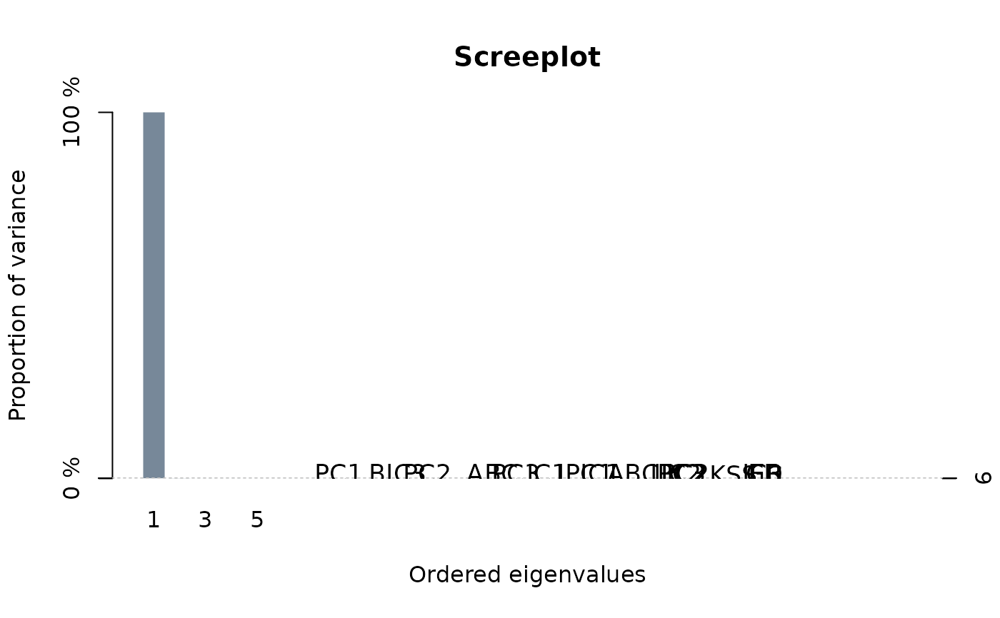

Estimation of the Factor Dimension
OptDim.RdFunctions for the Estimation of the Factor Dimension
Arguments
- Obj
The function requires either a Txn matrix or an object with class "`Eup"' or "`KSS"'.
- criteria
A character vector that contains the desired criteria to be used. If it is left unspecified, the function returns the result of all 16 criteria.
- standardize
logical. If
TRUEthe input variable will be standardized. Default isFALSE.- d.max
Maximal dimension used in the dimensionality-criteria of Bai (2009). The default (
d.max=NULL) yields to an internal selection of d.max.- sig2.hat
The squared standard deviation of the error-term required for the computation of some dimensionality criteria. The user can specify it in instead of
d.max. The default (sig2.hat=NULL) yields to an internal estimation.- spar
Smoothing parameter used to calculate the criterion of Kneip, Sickles, and Song (2012). The default is
NULL, which leads to internal computation.- level
The significance level used for the criterion of Kneip, Sickles, and Song (2012). The default is 0.01.
- c.grid
Required only for computing
"ABC.IC1"and"ABC.IC2". It specifies the grid interval in which the scaling parameter of the penalty terms in"ABC.IC1"and"ABC.IC2"are calibrated. Default isc.grid =seq(0, 5, length.out = 128).- T.seq
Required only for computing
"ABC.IC1"and"ABC.IC2". It can be a vector containing different dimensions for T or an integer indicating the length of the sequence to be considered in calibrating"ABC.IC1"and"ABC.IC2". If it is left unspecified, the function determines internally a sequence of the formseq((T-C), T), whereCis the square root ofmin{T,900}.- n.seq
Required only for computing
"ABC.IC1"and"ABC.IC2". It can be a vector containing different dimensions for n or an integer indicating the length of the sequence to be considered in calibrating"ABC.IC1"and"ABC.IC2". If it is left unspecified, the function determines internally a sequence of the formseq((n-D), n), whereDis the square root ofmin{n,900}.
Details
The function 'OptDim' allows for a comparison of the optimal factor dimensions obtained from different panel criteria (in total 13). This criteria are adjusted for panel data with diverging T and N.
Value
'OptDim' returns an object of 'class' '"OptDim"' containing a list with the following components:
- criteria:
The name of the criteria specified by the user.
- PC1:
If specified in
criteriaa table is returned with the optimal dimension, the empirical standard deviation of the residuals, and some other informations required internally by the criterion, such asd.maxand/ orsig2.hat.- PC2:
If specified in
criteriaa table is returned with the optimal dimension, the empirical standard deviation of the residuals, and some other informations required internally by the criterion, such asd.maxand/ orsig2.hat.- PC3:
If specified in
criteriaa table is returned with the optimal dimension, the empirical standard deviation of the residuals, and some other informations required internally by the criterion, such asd.maxand/ orsig2.hat.- IC1:
If specified in
criteriaa table is returned with the optimal dimension, the empirical standard deviation of the residuals, and some other informations required internally by the criterion, such asd.max.- IC2:
If specified in
criteriaa table is returned with the optimal dimension, the empirical standard deviation of the residuals, and some other informations required internally by the criterion, such asd.max.- IC3:
If specified in
criteriaa table is returned with the optimal dimension, the empirical standard deviation of the residuals, and some other informations required internally by the criterion, such asd.max.- IPC1:
If specified in
criteriaa table is returned with the optimal dimension, the empirical standard deviation of the residuals, and some other informations required internally by the criterion, such asd.maxand/ orsig2.hat.- IPC2:
If specified in
criteriaa table is returned with the optimal dimension, the empirical standard deviation of the residuals, and some other informations required internally by the criterion, such asd.maxand/ orsig2.hat.- IPC3:
If specified in
criteriaa table is returned with the optimal dimension, the empirical standard deviation of the residuals, and some other informations required internally by the criterion, such asd.maxand/ orsig2.hat.- KSS.C:
If specified in
criteriaa table is returned with the optimal dimension, the empirical standard deviation of the residuals, and some other informations required internally by the criterion, such asd.maxand/ orsig2.hat.- ED:
If specified in
criteriaa table is returned with the optimal dimension, the empirical standard deviation of the residuals, and some other informations required internally by the criterion, such asd.max.- ER:
If specified in
criteriaa table is returned with the optimal dimension, the empirical standard deviation of the residuals, and some other informations required internally by the criterion, such asd.max.- GR:
If specified in
criteriaa table is returned with the optimal dimension, the empirical standard deviation of the residuals, and some other informations required internally by the criterion, such asd.max.- summary:
A table (in a matrix form) containing all the estimated dimensions obtained by the specified criteria.
- BaiNgC:
A logical vector required for further internal computations.
- BaiC:
A logical vector required for further internal computations.
- KSSC:
A logical vector required for further internal computations.
- OnatC:
A logical vector required for further internal computations.
- RHC:
A logical vector required for further internal computations.
- obj:
The argument '
Obj' given to the functionOptDim().- cl:
Object of mode "call".
References
Ahn, S. C., Horenstein, A. R. 2013 “Eigenvalue ratio test for the number of factors”, Econometrica
Bai, J., 2009 “Panel data models with interactive fixed effects”, Econometrica
Bai, J. 2004 “Estimating cross-section common stochastic trends in nonstationary data”, Journal of Econometrics
Bai, J., Ng, S. 2009 “Determining the number of factors in approximated factor models”, Econometrica
Kneip, A., Sickles, R. C., Song, W., 2012 “A New Panel Data Treatment for Heterogeneity in Time Trends”, Econometric Theory
Onatski, A. 2010 “Determining the number of factors from empirical distribution of eigenvalues”, The Review of Economics and Statistics
Examples
## See the example in 'help(Cigar)' in order to take a look at the
## data set 'Cigar'
##########
## DATA ##
##########
data(Cigar)
N <- 46
T <- 30
## Data: Cigarette-Sales per Capita
l.Consumption <- log(matrix(Cigar$sales, T,N))
## Calculation is based on the covariance matrix of l.Consumption
OptDim(l.Consumption)
#> Call: OptDim.default(Obj = l.Consumption)
#>
#> ---------
#> Criterion of Kneip, Sickles, and Song (2012):
#>
#> KSS.C
#> 6
#>
#> ---------
#> Criteria of Bai and Ng (2002):
#>
#> PC1 PC2 PC3 BIC3 IC1 IC2 IC3
#> 5 5 5 4 5 5 5
#>
#> --------
#> Criteria of Ahn and Horenstein (2013):
#>
#> ER GR
#> 3 2
#>
#> ---------
#> Criteria of Bai (2004):
#>
#> IPC1 IPC2 IPC3
#> 3 3 2
#>
#> ---------
#> Criterion of Onatski (2009):
#>
#> ED
#> 4
#>
#> ---------
#> ABC calibration of IC1 and IC2 (Alessi et al. (2010)):
#>
#> ABC.IC1 ABC.IC2
#> 4 4
## Calculation is based on the correlation matrix of l.Consumption
OptDim(l.Consumption, standardize = TRUE)
#> Call: OptDim.default(Obj = l.Consumption, standardize = TRUE)
#>
#> ---------
#> Criterion of Kneip, Sickles, and Song (2012):
#>
#> KSS.C
#> 6
#>
#> ---------
#> Criteria of Bai and Ng (2002):
#>
#> PC1 PC2 PC3 BIC3 IC1 IC2 IC3
#> 5 5 5 4 5 5 5
#>
#> --------
#> Criteria of Ahn and Horenstein (2013):
#>
#> ER GR
#> 3 3
#>
#> ---------
#> Criteria of Bai (2004):
#>
#> IPC1 IPC2 IPC3
#> 3 3 2
#>
#> ---------
#> Criterion of Onatski (2009):
#>
#> ED
#> 4
#>
#> ---------
#> ABC calibration of IC1 and IC2 (Alessi et al. (2010)):
#>
#> ABC.IC1 ABC.IC2
#> 4 4
## Display the magnitude of the eigenvalues in percentage of the total variance
plot(OptDim(l.Consumption))
